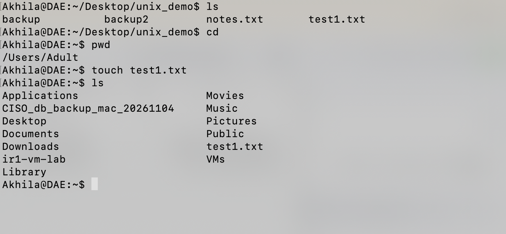
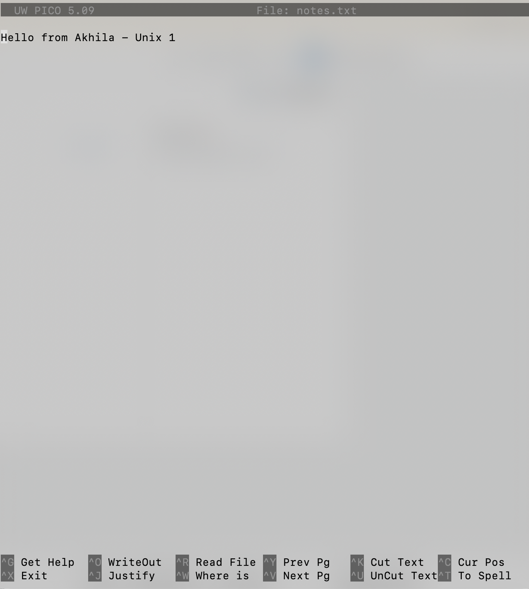

| Prepared by: | Akhila Chennamaneni, IAM & GRC Analyst (author) |
| Organization: | HealthLine Regional Medical Center (HRMC), Care Access Navigator (CAN) capstone |
| Course: | Unix 1 (DAE 6-Month Cybersecurity, Cohort 2) |
| Scope: | Final project |
| Environment: | macOS Terminal (zsh / bash), folder ~/Desktop/unix_demo |
| Date: | November 17, 2026 |
| Criterion | Evidence | Screenshot |
|---|---|---|
| Commands: ls, pwd, cat, touch | pwd, touch test1.txt, ls, cat notes.txt | 1, 2 |
| Options: add an option to a command | ls -l (the -l long-listing option) | 2 |
| Arguments: add an argument to a command | touch test1.txt, cat notes.txt, ls -l notes.txt | 1, 2 |
| Text editors: create and edit a file | nano notes.txt, typed and saved “Hello from Akhila - Unix 1”; cat shows the saved text | 3, 2 |
| Permissions: read, write, execute and view | chmod 755 notes.txt gives -rwxr-xr-x (read, write, execute); chmod 644 sets it back to -rw-r--r--; viewed with ls -l | 2 |

pwd prints the current folder, touch test1.txt creates an empty file, and ls lists it.
cat notes.txt prints the file. ls -l notes.txt (option -l, argument notes.txt) shows the permissions changing from rwxr-xr-x after chmod 755 to rw-r--r-- after chmod 644.
nano notes.txt: the file was created and edited, then saved with Ctrl+O and closed with Ctrl+X.